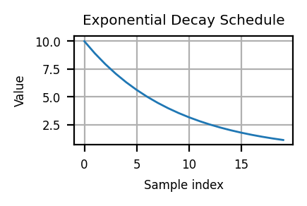

import numpy as np
grid_sz = (3,3)
ws = np.random.randn(*grid_sz)
ws.shape, ws
ws.shape, ws((3, 3),
array([[-1.361616 , -0.47049376, -0.95493151],
[ 1.41949963, -0.01988135, -1.88250715],
[-0.41864399, -1.87207718, -0.51610482]]))Reference: Self-Organizing Map (Kohonen)
NB: Generated a posteriori
I. CORE SOM COMPONENTS
V. REFACTORING
AI Prompt
I want to create an Python package implementing a Self Organizing Map. Several Python packages already exist but I would prefer creating it from scratch to be sure to understand every single piece.
The SOM implementation will be flexible and accept different distance metrics, learning rate and gaussian radius schedulers and assess SOM’s quality using relevant metrics.
I want to comply with Polya’s “How to solve it framework”.
I want also to make sure it uses numpy vectorization everywhere possible and use fastcore.
Refactoring as class should come at the end.
AI Response
I’ll help you create a Self-Organizing Map (SOM) implementation from scratch. Let’s follow Polya’s framework step by step.
This will help me tailor the guidance to your needs and ensure we build on your existing knowledge.
Also, before we proceed, could you outline which distance metrics and quality assessment measures you’re particularly interested in implementing? This will help us plan the architecture effectively.
AI Prompt
Let me try reformulating the SOM’s approach and tell me if my understanding is correct.
We have a grid of (random - but could be informed by data itself) weights (same dimension of the input).
For each sample of our training set, we want to find the weight most similar to the input (bmu - best matching unit in SOM’s jargon).
Once found we define a neighorhood function that essentially equal to 1 at the grid index of the bmu and decays/vanishes as further away from the bmu, as parametrized by a gaussian function with parameter sigma (to define a notion of “locality”).
Then the objective is to “pull” all weights toward this individual input but proportionaly to this neighborhood function. It means that we take the difference between the given input and the weights, and update the weights according to those differences and the neighborhood function.
A learning rate parameter also allow to specifify how quickly we want to update the weights for each sample.
What do you think? Did I capture the key concepts?
AI Response
Yes, that’s an excellent and accurate description of the SOM algorithm! Let me highlight the key components you’ve identified:
Would you like to start breaking this down into smaller implementation steps? We could begin by focusing on one of these components. Which part would you like to tackle first?
AI Prompt
Ok let’s devise a plan that I can use to further monitor my progress along my implementation.
AI Response
Following Polya’s framework, let’s create a structured plan. Here’s a suggested breakdown - please let me know if you’d like to modify any part:
Would you like to refine this plan? We can discuss what specific functionality you want in each component before starting the implementation.
AI Prompt
It sounds perfect! Let’s carry out the plan.
AI Response
Great! Let’s start with the first component: initializing the weight grid.
Before we write any code, we need to decide: 1. What parameters will we need for initialization? - Grid dimensions (e.g., n_rows, n_cols) - Input data dimension - Initialization method (random, PCA-based, etc.)
Would you like to start implementing the weight grid initialization? What initialization method would you prefer to begin with?
Let me know your preferences, and we can discuss how to make it efficient using numpy vectorization.
((3, 3),
array([[-1.361616 , -0.47049376, -0.95493151],
[ 1.41949963, -0.01988135, -1.88250715],
[-0.41864399, -1.87207718, -0.51610482]]))import matplotlib.pyplot as plt
plt.figure(figsize=(3, 2)) # Compact figure size
plt.rcParams.update({'font.size': 6}) # Base font size
# Create meshgrid for plotting
x, y = np.meshgrid(range(grid_sz[0]), range(grid_sz[1]))
plt.scatter(x, y, c=ws, s=100, cmap='viridis')
plt.colorbar(label='Weight values')
plt.grid(True)
plt.title('2D SOM Grid Initial Weights', fontsize=6)
plt.xlabel('X coordinate', fontsize=6)
plt.ylabel('Y coordinate', fontsize=6)
plt.xticks(fontsize=6)
plt.yticks(fontsize=6)
plt.tight_layout()
plt.show()AI Prompt
Each node of the grid (here 3x3) has a weight of 200 dimensions in our toy example. How to take the euclidean distance between each weight and a 200-dimensional input?
AI Response
Let’s think about this vectorized approach:
We have two main vectorized approaches we could use: 1. Using numpy broadcasting and np.sum 2. Using scipy’s cdist (which handles this specific case)
Would you like to try implementing one of these approaches? I can guide you through the numpy broadcasting solution first if you’d like, or we can discuss the trade-offs between the two approaches.
Which would you prefer to explore first?
Numpy will broadcast the 1-dimensioal input vector of shape (200,) to (3,3,200) to align it to the weights shape. We want the distance between each unit (200-dimensional in our toy example) and the given input. There are two ways to do so. Either using native numpy or …
(3, 3, 200)# Now we take the root square of the square distance element-wise and take their sum along the last dimension (200)
np.sqrt(np.sum((X[0]-ws)**2, axis=-1))array([[17.91644487, 19.40803926, 18.10014622],
[18.92468523, 19.64872772, 21.76170238],
[21.98737528, 20.59933278, 19.29730677]])array([[17.91644487, 19.40803926, 18.10014622],
[18.92468523, 19.64872772, 21.76170238],
[21.98737528, 20.59933278, 19.29730677]])AI Prompt
I’d like to find the closest unit/node from a given input and want to return its index.
AI Response
To find the BMU index, we need to: 1. Get the distances (which we already calculated) 2. Find the index of the minimum distance in our 2D grid
We can use np.argmin(), but since we have a 2D grid, we’ll need to consider how to handle the indices. Would you like to try implementing this yourself, or would you like me to suggest an approach?
A key consideration is whether you want: - A flat index (single number) - Grid coordinates (row, col)
Which format would be more useful for your implementation?
AI Prompt
I want to find the grid coordinates but np.argmin() seems to work only for flatten arrays.
AI Response
Ah yes! For 2D coordinates, we can use np.unravel_index() together with np.argmin(). This combination will:
np.argmin() finds the index in the flattened arraynp.unravel_index() converts this flat index back to grid coordinatesWould you like to try implementing this yourself using these functions? I can provide more details about how np.unravel_index() works if needed.
np.random.seed(1)
ws = np.random.randn(2,2,1)
x = np.array(0.5)
d = dist_fn(X[0], ws)
print(x, '\n', d)
np.argmin(d)0.5
[[27.38521073 16.09891829]
[15.54144978 20.16819721]]2So, finding the grid index of the smallest distance is as simple as taking the np.argmin (internally flattening the array) and then using np.unravel_index with grid shape specified:
AI Prompt
Let me try to recap and reformulate the role of the neighborhood function with my own words. The weights update will be carried out according to the following logic: 1. we first get the distance between a given input and all units/nodes 2. the closest unit is called the bmu 3. Each unit will be then updated as a function of: - its distance from the given input - but also of its “decayed” distance of its grid index from the bmu - by “decayed” we mean that using a gaussian function parametrized by a “radius of influence” or a “degree of locality”, we update the units close from the bmu more than the distant one.
Hence the neighborhood function, should return for a given node a coefficient that will be used to further weigh the weights update. Last, it is important to note that this update will be further parametrized by a learning rate lr.
Is my thinking correct?
AI Response
Yes, your understanding is excellent! You’ve captured all the key aspects of the neighborhood function and its role in weight updates. Let me confirm each point:
Would you like to start implementing the neighborhood function? We’ll need to: 1. Calculate grid distances from BMU to all nodes 2. Apply gaussian decay to these distances
Which part would you like to tackle first?
AI Prompt
From the (3,4) shape I’d like to create two numpy arrays: one of shape (1,4) with the following values [0,1,2,3] (the rows idx) and one of shape (3,1) with the following values [0,1,2]. From those arrays, I then want to calculate the delta x and delta y from the bmu coordinates to eventually get a neighborhood function then I’d further weigh by a gaussian kernel. Can you guide me?
AI Response
I’ll help you step by step:
np.arange():x_coords = np.arange(4).reshape(1, 4) # [0,1,2,3] shape (1,4)
y_coords = np.arange(3).reshape(3, 1) # [0,1,2] shape (3,1)Would you like to try this first and then we can move on to calculating the deltas from the BMU coordinates?
The next step would be subtracting the BMU’s x and y coordinates from these arrays. Would you like to try that yourself, or would you like more guidance?
AI Prompt
Isn’t there a more straightforward to get those x and y coords directly from the shape (3,4) using a dedicated numpy method?
AI Response
Ah yes! You can use np.meshgrid() to directly generate coordinate arrays from the shape. This function is specifically designed for creating coordinate matrices. Would you like to explore how to use np.meshgrid() for this purpose?
Let me know if you want to try it yourself first, or if you’d like me to show you how it works with your (3,4) shape example.
AI Prompt
I’ve heard about this method: np.ogrid[0:grid_sz[0], 0:grid_sz[1]] Don’t you think it would be more convenient?
AI Response
Yes, absolutely! np.ogrid is a more concise and elegant solution for this case. It creates an “open mesh” which is exactly what we need - two arrays suitable for broadcasting, without actually storing the full mesh in memory.
Would you like to try using np.ogrid to: 1. Create the coordinate arrays 2. Calculate the deltas from the BMU position
Which step would you like to tackle first?
(array([[0],
[1],
[2]]),
array([[0, 1, 2, 3]]))array([[8, 5, 4, 5],
[5, 2, 1, 2],
[4, 1, 0, 1]])def grid_dist2(bmu_idx, grid_sz):
rows_idx, cols_idx = np.ogrid[0:grid_sz[0], 0:grid_sz[1]]
return (bmu_idx[0] - rows_idx)**2 + (bmu_idx[1] - cols_idx)**2
grid_dist2(bmu_idx, ws.shape[:2])array([[8, 5, 4, 5],
[5, 2, 1, 2],
[4, 1, 0, 1]])AI Prompt
I think that now suffices to pass this array to a Gaussian function to create our neighborhood function, don’t you think?
AI Response
Yes, exactly! We can create a Gaussian decay function using np.exp(-dist²/(2σ²)), where: - dist² is what we just calculated - σ (sigma) is our radius parameter that controls the spread of the neighborhood
Would you like to try implementing this Gaussian function? We’ll need to: 1. Take our squared distances 2. Apply the Gaussian formula with a sigma parameter
Would you like to try this yourself, or would you like some guidance on the implementation?
gaussian_fn = lambda dists, sigma: np.exp(-dists/(2*sigma**2))
gaussian_fn(grid_dist2(bmu_idx, ws.shape[:2]), 1)array([[0.01831564, 0.082085 , 0.13533528, 0.082085 ],
[0.082085 , 0.36787944, 0.60653066, 0.36787944],
[0.13533528, 0.60653066, 1. , 0.60653066]])from functools import partial
def neighborhood_fn(dists, kernel_fn):
return kernel_fn(dists)
dists = grid_dist2(bmu_idx, ws.shape[:2])
kernel_fn = partial(gaussian_fn, sigma=1)
neighborhood_fn(dists, kernel_fn)array([[0.01831564, 0.082085 , 0.13533528, 0.082085 ],
[0.082085 , 0.36787944, 0.60653066, 0.36787944],
[0.13533528, 0.60653066, 1. , 0.60653066]])AI Prompt
Let me reformulate the weight update rule. Given an input, the SOM weights/nodes/units will be updated as follows: 1. compute the distance between the input and all weights/nodes/units, d 2. compute the distance from the bmu position from all other grids/weights position d_grid`` 3.w_new = w + lrdneighborhood_fn(d_grid) where lr is the learning rate
In summary at every iteration (new sample), we pull all weights and their surroundings (as defined by the neighborhood function) toward the input (the bmu weights being the most affected).
Am I right?
AI Response
Yes, your understanding is perfect! Let me break down your correct formulation:
For each input sample: 1. ✓ Calculate distances between input and all weights 2. ✓ Find BMU (closest weight) 3. ✓ Calculate grid distances from BMU position 4. ✓ Apply neighborhood function to grid distances 5. ✓ Update weights using the formula: w_new = w + lr * (input - w) * neighborhood_fn(d_grid)
One small clarification to your formula: the d term should be (input - w), representing the direction and magnitude of the update.
Would you like to try implementing this update rule? We can break it down into steps if you’d like.
Let’s do it step-by-step while checking shapes “compatibility” for numpy broadcasting.
# Define kernel function with wanted parameter
kernel_fn = partial(gaussian_fn, sigma=1)
# Get bmu position
bmu_idx = bmu_coords(dist_fn(x, ws), ws.shape[:2])
# Compute neighborhood weights for each unit
nbh = neighborhood_fn(grid_dist2(bmu_idx, ws.shape[:2]), kernel_fn)
nbh.shape(2, 2)The neighborhood will weigh eacg node’s update give its distance from the bmu and provided kernel functions. So we want an element-wised multiplication between this 2x2array and the first two dimensions of the (x-ws) differences. Hence to be able to use numpy broadasting we have to add an additional trailing dimension to the neighborhood.
We now have all components required to define the update function.
lr = 1
ws = np.random.randn(2,2,3)
x = np.array(0.5)
d = dist_fn(x, ws)
bmu_idx = bmu_coords(d, ws.shape[:2])
d_grid = grid_dist2(bmu_idx, ws.shape[:2])
kernel_fn = partial(gaussian_fn, sigma=1)
nbh = neighborhood_fn(grid_dist2(bmu_idx, ws.shape[:2]), kernel_fn)
ws + lr * (nbh[..., np.newaxis] * (x-ws))array([[[ 0.01460216, 0.51918831, -0.25327326],
[ 0.14715498, 0.03288394, -0.02929718]],
[[ 0.03915056, 0.2982822 , -0.13636204],
[ 0.5 , 0.5 , 0.5 ]]])def update(x, ws, dist_fn, kernel_fn, lr=1):
bmu_idx = bmu_coords(dist_fn(x, ws), ws.shape[:2])
d_grid = grid_dist2(bmu_idx, ws.shape[:2])
nbh = neighborhood_fn(grid_dist2(bmu_idx, ws.shape[:2]), kernel_fn)
return ws + lr * nbh[..., np.newaxis] * (x-ws)
ws = np.random.randn(2,2,3)
x = np.array([0.5, 0.1, 0.2])
kernel_fn = partial(gaussian_fn, sigma=1)
update(x, ws, dist_fn, kernel_fn, lr=1)array([[[ 0.06267652, -0.52430057, -0.39871823],
[ 0.96919433, 0.08064436, -0.12933212]],
[[ 0.37838472, 0.88703907, 0.168585 ],
[ 0.5 , 0.1 , 0.2 ]]])ws = np.array([
[[1], [2]],
[[3], [4]
]])
np.squeeze(ws) # squeeze the trailing dim for clearer printingarray([[1, 2],
[3, 4]])array([[2.03006244, 3.09175519],
[3.48522453, 3.8 ]])Ok, we observe that the SOM’s nodes are pulled toward the bmu accordingly. We have all core SOM compoenents, we can implement now the training loop.
AI Prompt
I think that should be pretty straightforward to implement. We know how to update the SOM/weights for every single data point. It suffices to iterate over the training set multiple times (epochs) until we think this is enough right?
Obviously it raises a couple of questions. First usually, the learning rate and for instance the gaussian kernel sigma are decayed during training. Second, after each epoch (one pass over the train set), we’d like to log some metrics (Quantization error and Topographic error). Also, I think that would be very useful if we could visualize how the SOM improves as we add new features like scheduled learning rate and gaussian kernel sigma. Hence, I’d like to implement a U-Matrix visualization in priority. So I think we have to slightly revised the initial plan (shown below) to take into account both decay, metrics and U-matrix now as it is interleaved with the training loop. Ideally, we should implement second the training loop but implement in this main step also U-Matrix visualization, … so that we can see how the training loop, training loop + scheduler affect the training visually.
Initial plan: Following Polya’s framework, let’s create a structured plan. Here’s a suggested breakdown - please let me know if you’d like to modify any part:
Please adjust the plan accordingly.
AI Response
You make excellent points! Yes, we should revise the plan to better integrate visualization and metrics with the training loop, since they’re crucial for understanding how the SOM evolves. Here’s a suggested revision:
Would you like to start with implementing the training loop along with U-Matrix visualization so you can see the SOM’s evolution during training?
Let’s first implementing a training (fit) loop to see where and how scheduling should take place.
Defaulting to user installation because normal site-packages is not writeable
Requirement already satisfied: scikit-learn in ./.local/lib/python3.11/site-packages (1.6.0)
Requirement already satisfied: numpy>=1.19.5 in /usr/local/lib/python3.11/site-packages (from scikit-learn) (1.26.3)
Requirement already satisfied: scipy>=1.6.0 in /usr/local/lib/python3.11/site-packages (from scikit-learn) (1.14.1)
Requirement already satisfied: joblib>=1.2.0 in ./.local/lib/python3.11/site-packages (from scikit-learn) (1.4.2)
Requirement already satisfied: threadpoolctl>=3.1.0 in ./.local/lib/python3.11/site-packages (from scikit-learn) (3.5.0)
[notice] A new release of pip is available: 24.0 -> 24.3.1
[notice] To update, run: pip install --upgrade pipAI Prompt
I’d like to create a U-Matrix visualization. Correct me if I am wrong but my understanding is the following: - for each unit/node, we compute the average or sum of the distances between the node and its neighbours (from 2 for the corners to 3 at the edges and 4 for the others) - we then represent those aggregated “surrounding” distances in the grid - it can be interpreted as follows (when bright is small distance and dark is large distance): a group of bright nodes surrounded by dark ones suggest a cluster
Am I right?
AI Response
Yes, your understanding of the U-Matrix (Unified Distance Matrix) is correct! Let me confirm each point:
Would you like to implement this visualization? We’ll need to: 1. Create a function to find neighbors for each node 2. Calculate distances between neighbors 3. Create the visualization
Which part would you like to tackle first?
# Test weights matrix (SOM)
x = np.array([
[[1], [3], [1]],
[[11], [4], [2]],
[[7], [8], [5]]])
np.squeeze(x)array([[ 1, 3, 1],
[11, 4, 2],
[ 7, 8, 5]])I first attempted an approach using vectorization, padded and masked version of the weights. I am finding cluncky and much less readable than a more straightforward iteration throughout the weights.
# For instance a right-padded version of test weights matrix
x_right = np.pad(x, ((0,0), (0,1), (0,0)), mode='edge')
d_right = np.linalg.norm(x_right[:,1:] - x_right[:,0:-1], axis=-1)
d_rightarray([[2., 2., 0.],
[7., 2., 0.],
[1., 3., 0.]])Below, an iterative approach:
n_rows, n_cols = 3,3
pos = (0,1)
_ws = []
ds = []
for dr,dc in nbr_offsets:
r,c = pos
nbr_r, nbr_c = r+dr, c+dc
if (nbr_r>=0 and nbr_r<n_rows) and (nbr_c>=0 and nbr_c<n_cols):
w = 1/np.sqrt(dr**2 + dc**2)
_ws.append(w)
d = np.linalg.norm(x[r, c] - x[nbr_r, nbr_c], axis=-1)
ds.append(d)
print(f'distance between: {r,c} and {nbr_r, nbr_c}: {d} with weight: {w:.2f}')
np.average(ds, weights=_ws)distance between: (0, 1) and (0, 0): 2.0 with weight: 1.00
distance between: (0, 1) and (0, 2): 2.0 with weight: 1.00
distance between: (0, 1) and (1, 0): 8.0 with weight: 0.71
distance between: (0, 1) and (1, 1): 1.0 with weight: 1.00
distance between: (0, 1) and (1, 2): 1.0 with weight: 0.712.5744021828816153def is_in_bounds(row_idx, col_idx, ws):
n_rows, n_cols = ws.shape[:2]
return (row_idx>=0 and row_idx<n_rows) and (col_idx>=0 and col_idx<n_cols)
print(is_in_bounds(0,0,x))
print(is_in_bounds(-1,0,x))
print(is_in_bounds(4,0,x))True
False
Falsedef nbr_dist(pos, ws, dist_fn, nbr_offsets=nbr_offsets):
weights = []
ds = []
for dr,dc in nbr_offsets:
r,c = pos
nbr_r, nbr_c = r+dr, c+dc
if is_in_bounds(nbr_r, nbr_c, ws):
weights.append(1/np.sqrt(dr**2 + dc**2))
d = dist_fn(ws[r, c] - ws[nbr_r, nbr_c], axis=-1)
ds.append(d)
return np.average(ds, weights=weights)
pos = (0,1)
nbr_dist(pos, x, np.linalg.norm)2.5744021828816153u_matrix = np.zeros(x.shape[:2])
for i, j in np.ndindex(x.shape[:2]):
u_matrix[i,j] = nbr_dist((i,j), x, np.linalg.norm)
u_matrixarray([[5.21638838, 2.57440218, 1.89180581],
[6.51943414, 3.08578644, 2.48056586],
[2.63060194, 3.25402494, 2.47759225]])def calculate_umatrix(weights, dist_fn=np.linalg.norm):
u_matrix = np.zeros(weights.shape[:2])
for i, j in np.ndindex(weights.shape[:2]):
u_matrix[i,j] = nbr_dist((i,j), weights, dist_fn)
return u_matrix
calculate_umatrix(x)array([[5.21638838, 2.57440218, 1.89180581],
[6.51943414, 3.08578644, 2.48056586],
[2.63060194, 3.25402494, 2.47759225]])from tqdm import trange, tqdm
n_epochs = 20
for epoch in tqdm(range(n_epochs)):
X_ = np.random.permutation(X)
for x in X:
kernelf_fn = partial(gaussian_fn, sigma=1)
ws = update(x, ws, dist_fn, kernel_fn, lr=0.1)
0%| | 0/20 [00:00<?, ?it/s]
5%|5 | 1/20 [00:00<00:02, 7.25it/s]
10%|# | 2/20 [00:00<00:02, 7.38it/s]
15%|#5 | 3/20 [00:00<00:02, 7.51it/s]
20%|## | 4/20 [00:00<00:02, 7.57it/s]
25%|##5 | 5/20 [00:00<00:01, 7.55it/s]
30%|### | 6/20 [00:00<00:01, 7.54it/s]
35%|###5 | 7/20 [00:00<00:01, 7.58it/s]
40%|#### | 8/20 [00:01<00:01, 7.58it/s]
45%|####5 | 9/20 [00:01<00:01, 7.58it/s]
50%|##### | 10/20 [00:01<00:01, 7.54it/s]
55%|#####5 | 11/20 [00:01<00:01, 7.56it/s]
60%|###### | 12/20 [00:01<00:01, 7.57it/s]
65%|######5 | 13/20 [00:01<00:00, 7.55it/s]
70%|####### | 14/20 [00:01<00:00, 7.50it/s]
75%|#######5 | 15/20 [00:01<00:00, 7.54it/s]
80%|######## | 16/20 [00:02<00:00, 7.58it/s]
85%|########5 | 17/20 [00:02<00:00, 7.55it/s]
90%|######### | 18/20 [00:02<00:00, 7.54it/s]
95%|#########5| 19/20 [00:02<00:00, 7.55it/s]
100%|##########| 20/20 [00:02<00:00, 7.57it/s]
100%|##########| 20/20 [00:02<00:00, 7.54it/s]AI Prompt
Great, we clearly see the 3 clusters captured. Now I’d like to implement some of the metrics: Quantization Error and Topographic Error so that to log it after every epoch ideally.
AI Response
Let’s implement these two metrics:
Would you like to implement these metrics one at a time? We can start with the Quantization Error since it’s simpler and uses components we already have (distance function and BMU finding).
Which metric would you prefer to tackle first?
AI Prompt
Here is my understanding and plan to calculate QE (Quantization Error) For each sample of the training set we have to: - identify its bmu (we already have a function for this) - calculate input/sample distance from its bmu (we have this already) - take the mean of those distances
Actually when we search the bmu, we take the argmin of the distances between each node/unit and the input. Here, we don’t need to search the bmu, taking the min of the distances would already solve our problem.
In summary, I think we already have all elements. What do you think?
AI Response
Yes, your understanding is perfect! You’ve made a very astute observation about reusing the distance calculation and just needing the minimum value rather than its position.
For each input x, we: 1. Calculate distances to all nodes (using our dist_fn) 2. Take the minimum distance (don’t need argmin, just min) 3. Average these minimum distances across all inputs
Would you like to try implementing this as a function? We can use numpy’s vectorized operations to make it efficient. Would you like to try it yourself first, or would you like some guidance?
0.14465875369726378n_samples = len(X)
grid_sz = (n_nodes(n_samples),n_nodes(n_samples))
ws = np.random.randn(*grid_sz, X.shape[-1])
qe_errs = []
n_epochs = 20
for epoch in range(n_epochs):
X_ = np.random.permutation(X)
for x in X:
kernelf_fn = partial(gaussian_fn, sigma=1)
ws = update(x, ws, dist_fn, kernel_fn, lr=0.1)
qe_errs.append(qe_err(X, ws))AI Prompt
Let me give you my understanding of the Topographic Error metric. For each sample, - we take is best matching unit (bmu1) and its second best matching unit (bmu2) - if bmu2 is not adjacent (left, right, bottom, up, bottom right, …) to bmu1 we count it as one error
TE is simply the percentage of the number of such errors over the total number of training samples. Is my understanding correct?
AI Response
Yes, your understanding of Topographic Error is exactly right! Let’s break down the key points:
We already have most pieces: - Distance calculation - BMU finding - Neighbor definition (from U-Matrix implementation)
Would you like to create a function to: 1. Find the second-best BMU (we’ll need to modify our existing BMU code), or 2. Check if two positions are adjacent (we can use our nbr_offsets from earlier)
Which part would you like to tackle first?
AI Prompt
How could I find the index of the two closest units/element in a SOM/array? I could possibly identify the bmu using the function already available, reassign the value of this bmu to np.inf on a copy of the som and take the bmu again to get the second one. What do you think? It is likely we can do it in a more straightforward way, don’t you think?
AI Response
Ah yes, there’s a more elegant way! We can use np.argpartition() which is specifically designed to find the k smallest (or largest) elements in an array. It’s more efficient than your suggested approach since:
Would you like to explore how to use np.argpartition() to find the indices of the two smallest distances? We can then use np.unravel_index() like we did before to convert these to grid coordinates.
Would you like to try this approach?
AI Prompt
Can you explain how to retrieve the two smallest value in a 2D numpy array using np.argpartition?
AI Response
Let’s break this down with a simple example:
# Create a sample 2D array
arr = np.array([[5, 2, 3],
[1, 7, 4],
[6, 8, 9]])
# Get indices of 2 smallest values using np.argpartition
# We first flatten the array, then find indices of 2 smallest values
flat_indices = np.argpartition(arr.flatten(), 2)[:2]
# Convert flat indices back to 2D coordinates using unravel_index
indices_2d = np.unravel_index(flat_indices, arr.shape)Would you like to try this with a small example to see how it works? We can then adapt it for our SOM distances.
# Create a sample 2D array
arr = np.array([[5, 2, 3],
[1, 7, 4],
[6, 8, 9]])
# Get indices of 2 smallest values using np.argpartition
# We first flatten the array, then find indices of 2 smallest values
flat_indices = np.argpartition(arr.flatten(), 2)[:2]
print(f'flat indices: {flat_indices}')
# Convert flat indices back to 2D coordinates using unravel_index
rows_idx, cols_idx = np.unravel_index(flat_indices, arr.shape)
list(zip(rows_idx, cols_idx))flat indices: [3 1][(1, 0), (0, 1)]array([[2.9, 0.9, 2.9],
[7.1, 0.1, 1.9],
[3.1, 4.1, 1.1]])arr = dist_fn(np.array(3.9), x)
flat_indices = np.argpartition(arr.flatten(), 2)[:2]
rows_idx, cols_idx = np.unravel_index(flat_indices, arr.shape)
list(zip(rows_idx, cols_idx))[(1, 1), (0, 1)]Actually by checking directly the difference of rows and cols indices returned for the two closest elements we can already check if they are adjacent or not (if any of the difference of the two > 1).
arr = dist_fn(np.array(3.9), x)
flat_indices = np.argpartition(arr.flatten(), 2)[:2]
indices = np.unravel_index(flat_indices, arr.shape)
indices(array([1, 0]), array([1, 1]))Ok I think we have everything to implement the TE error.
n_errs = 0
for x in X:
arr = dist_fn(x, ws)
flat_indices = np.argpartition(arr.flatten(), 2)[:2]
indices = np.unravel_index(flat_indices, arr.shape)
if any([np.abs(x-y)> 1 for x,y in indices]): n_errs+=1
n_errs38def te_err(X, ws, dist_fn=dist_fn):
n_errs = 0
for x in X:
arr = dist_fn(x, ws)
flat_indices = np.argpartition(arr.flatten(), 2)[:2]
indices = np.unravel_index(flat_indices, arr.shape)
if any([np.abs(x-y)> 1 for x,y in indices]): n_errs+=1
return 100*n_errs / len(X)
te_err(X, ws)3.8n_samples = len(X)
grid_sz = (n_nodes(n_samples),n_nodes(n_samples))
ws = np.random.randn(*grid_sz, X.shape[-1])
te_errs = []
n_epochs = 20
for epoch in range(n_epochs):
X_ = np.random.permutation(X)
for x in X:
kernelf_fn = partial(gaussian_fn, sigma=1)
ws = update(x, ws, dist_fn, kernel_fn, lr=0.1)
te_errs.append(te_err(X, ws))AI Prompt
We want a scheduler that given current step (epoch?) will decay both the learning rate and sigma for instance. Now I have a question. What do you think, should I make it flexible enough so that we could potentially decay them even before the end of an epoch?
AI Response
That’s a great question! Yes, making the scheduler flexible enough to handle both epoch-level and sample-level updates would be more versatile, because:
Would you like to design a scheduler interface that can handle both cases? We could: 1. Make it step-based rather than epoch-based 2. Let the user define what constitutes a “step” 3. Allow different decay functions
Would you like to explore any of these aspects first?
AI Prompt
Letting users define what constitues a “step” (e.g every n samples) sounds more flexible I think. Let’s implement it.
AI Response
Good choice! Let’s design a flexible scheduler. We’ll need to:
Would you like to start with implementing a basic scheduler class or first explore some common decay functions?
For decay functions, we could implement common ones like: - Linear decay - Exponential decay - Power decay (polynomial)
Which would you prefer to tackle first?
AI Prompt
I step_sz means the every number of samples requires before updating a value. How to name the total number of samples*number of epochs where we reach the end of the decay?
AI Response
In scheduling contexts, this is often called the “total_steps” or “max_steps” - it represents the total number of update opportunities over the entire training process.
So if we have: - n_samples = 1000 - n_epochs = 20 - step_size = 10 (update every 10 samples)
Then:
Would you like to use one of these names, or do you have another preference for what to call this parameter? We could also call it “decay_steps” or “schedule_length” if you think that would be clearer.
def exp_sched(start_val, end_val, i, n_steps):
decay = -np.log(end_val/start_val)/n_steps
return start_val * np.exp(-decay * i)
step_sz = 5000
n_samples = 10_000
n_epochs = 10
n_steps = n_epochs*n_samples//step_sz
start_v, end_v = 10, 1
step_idx = 0
v = start_v
vs = []
steps = []
for i in range(n_epochs):
for j in range(n_samples):
total_samples = i*n_samples + j
if total_samples % step_sz == 0:
v = exp_sched(start_v, end_v, step_idx, n_steps)
vs.append(v)
steps.append(step_idx)
step_idx+=1plt.figure(figsize=(2, 1))
plt.plot(steps, vs, lw=1)
plt.grid(True)
plt.xlabel('Sample index')
plt.ylabel('Value')
plt.title('Exponential Decay Schedule')
plt.show()
class Scheduler:
def __init__(self, start_val, end_val, step_size,
n_samples, n_epochs, decay_fn=exp_sched):
store_attr()
self.current_step = 0
self.current_value = start_val
self.total_steps = (n_samples * n_epochs) // step_size
def step(self, total_samples):
if total_samples % self.step_size == 0:
self.current_value = self.decay_fn(
self.start_val, self.end_val,
self.current_step, self.total_steps
)
self.current_step += 1
return self.current_valuen_samples = len(X)
grid_sz = (n_nodes(n_samples),n_nodes(n_samples))
ws = np.random.randn(*grid_sz, X.shape[-1])
step_size=100
lr_scheduler = Scheduler(start_val=1, end_val=0.01, step_size=step_size,
n_samples=len(X), n_epochs=n_epochs)
sigma_scheduler = Scheduler(start_val=6.0, end_val=1., step_size=step_size,
n_samples=len(X), n_epochs=n_epochs)
n_epochs = 20
# Training loop
for epoch in range(n_epochs):
X_ = np.random.permutation(X)
for i, x in enumerate(X_):
total_samples = epoch * len(X) + i
# Get current lr and sigma values
lr = lr_scheduler.step(total_samples)
sigma = sigma_scheduler.step(total_samples)
# Update weights using current lr and sigma
kernel_fn = partial(gaussian_fn, sigma=sigma)
ws = update(x, ws, dist_fn, kernel_fn, lr=lr)def fit(X, ws, lr_scheduler, sigma_scheduler, n_epochs=20, shuffle=True):
qe_errs = []
te_errs = []
for epoch in range(n_epochs):
X_ = np.random.permutation(X) if shuffle else X.copy()
for i, x in enumerate(X_):
total_samples = epoch * len(X) + i
lr = lr_scheduler.step(total_samples)
sigma = sigma_scheduler.step(total_samples)
kernel_fn = partial(gaussian_fn, sigma=sigma)
ws = update(x, ws, dist_fn, kernel_fn, lr=lr)
qe, te = qe_err(X,ws), te_err(X,ws)
qe_errs.append(qe)
te_errs.append(te)
print(f'Epoch: {epoch+1} | QE: {qe_err(X,ws)}, TE: {te_err(X,ws)}')
return ws, qe_errs, te_errsn_samples = len(X)
grid_sz = (n_nodes(n_samples),n_nodes(n_samples))
ws = np.random.randn(*grid_sz, X.shape[-1])
step_size=100
lr_scheduler = Scheduler(start_val=1, end_val=0.01, step_size=step_size,
n_samples=len(X), n_epochs=n_epochs)
sigma_scheduler = Scheduler(start_val=6.0, end_val=1., step_size=step_size,
n_samples=len(X), n_epochs=n_epochs)
ws, qe_errs, te_errs = fit(X, ws, lr_scheduler, sigma_scheduler, n_epochs=20)Epoch: 1 | QE: 0.7361545362516652, TE: 0.1
Epoch: 2 | QE: 0.5148950211961353, TE: 1.4
Epoch: 3 | QE: 0.4161479264406785, TE: 2.5
Epoch: 4 | QE: 0.3261032895452769, TE: 0.3
Epoch: 5 | QE: 0.4344722303659532, TE: 0.6
Epoch: 6 | QE: 0.4660129942532872, TE: 0.1
Epoch: 7 | QE: 0.3492315992581065, TE: 0.6
Epoch: 8 | QE: 0.30374238796782127, TE: 1.3
Epoch: 9 | QE: 0.31955520142421034, TE: 0.4
Epoch: 10 | QE: 0.26528420358326743, TE: 0.3
Epoch: 11 | QE: 0.23678200850531003, TE: 0.8
Epoch: 12 | QE: 0.21944164206845745, TE: 0.6
Epoch: 13 | QE: 0.20784349249994324, TE: 0.5
Epoch: 14 | QE: 0.20141528673718959, TE: 1.2
Epoch: 15 | QE: 0.18861138082733617, TE: 0.9
Epoch: 16 | QE: 0.17765457467386436, TE: 1.5
Epoch: 17 | QE: 0.17077969894350056, TE: 1.1
Epoch: 18 | QE: 0.16341102935415364, TE: 1.5
Epoch: 19 | QE: 0.15816356896585257, TE: 1.3
Epoch: 20 | QE: 0.154156360812519, TE: 0.7AI Prompt
I am wondering how to best choose the initial and end learning rate and sigma. Is there any standard methodology other than grid search? Any thumb of rules I must be aware of?
AI Response
Yes, there are some common guidelines for SOM hyperparameters:
Would you like to try adjusting your parameters based on these guidelines?
AI Prompt
No that’s ok for now, thanks a lot! Now I think we need once more time to revise the plan as we are making very good progress and focus on the remaining steps. As a reminder, here below the previous plan: You make excellent points! Yes, we should revise the plan to better integrate visualization and metrics with the training loop, since they’re crucial for understanding how the SOM evolves. Here’s a suggested revision:
I have further specified which steps were already completed! You evoked additional visualization techniques (on top of the u-matrix) and possible additional metrics. Last the refactoring and documentation phases remains highligh important as final steps. However there is one important aspects we have not addressed that we should address next which is the initialization of the SOM/weights. Now we are doing it randomly, I think we can use PCA also. I would be interested to understand it in further details and implement it.
Can you advise and propose an update plan? Important: Consider the numbering of each steps already used so that the new plan can be appended to it consistently.
AI Response
Yes, you’re right! The PCA initialization is an important addition. Here’s the updated plan, maintaining consistent numbering and adding the initialization as step 6 before refactoring:
V. Refactoring & Documentation - Class structure - Flexible interfaces - Comprehensive documentation - Usage examples
Would you like to start exploring the PCA initialization approach? I can explain how PCA can help initialize the SOM weights more effectively than random initialization.
AI Prompt
Can you explain what’s the idea of using PCA to initialize SOM weights?
AI Response
The idea behind PCA initialization for SOM weights is quite clever:
Would you like me to explain more about how this works in practice, or would you prefer to start implementing it?
AI Prompt
Yes I know PCA but your statement “Using these to create a linear interpolation grid” is a bit unclear to me. Please further elaborate.
AI Response
Ah, let me clarify the linear interpolation part:
Let’s say we have a 4x4 SOM grid and our data is 3-dimensional. After PCA:
So each weight vector is a linear combination of PC1 and PC2, creating a regular grid that spans the main directions of variation in your data.
Would you like to see this process with a small example using your dataset?
AI Prompt
Thanks it’s a bit clearer. Let me try to reformulate it, in the context of a highly dimensional dataset (which is the primary target of SOM), we take the two largest principal components (PCs) and generate the initial weights of the grid in the span of those two PCs.
I have two remarks: - in the situation where our input dataset is 2D, there would be no added value as we could have equally taken initial weights in the span of the initial basis (randomly) - don’t you think that would be also important to consider the eigen values (% of variance explained by each PCs) to generate those initial SOM weights? Do you see my point?
What do you think?
AI Response
Excellent observations! Let me address both points:
Would you like to modify the initialization approach to incorporate the eigenvalues? We could scale the α and β coefficients by the square root of their respective eigenvalues to reflect the relative importance of each direction.
AI Prompt
Great!Let’s implement it but let me try first.
AI Response
Perfect! Go ahead and try implementing it yourself. If you get stuck or want to discuss your implementation, I’m here to help.
Remember you’ll need to: 1. Perform PCA on your data 2. Get the first two PCs and their eigenvalues 3. Create the interpolation grid with eigenvalue scaling
Let me know when you want to discuss your implementation or if you need any clarification!
To assess the added value of PCA initialization we should use a higher dimentionsal toy dataset. We choose the MNIST dataset for that purpose as provided by scikitlearn.
((1797, 64), (1797,))#n_samples = len(X)
#grid_sz = (n_nodes(n_samples),n_nodes(n_samples))
grid_sz = (20,20)
ws = np.random.randn(*grid_sz, X.shape[-1])
step_size=200
lr_scheduler = Scheduler(start_val=1, end_val=0.01, step_size=step_size,
n_samples=len(X), n_epochs=n_epochs)
sigma_scheduler = Scheduler(start_val=10.0, end_val=1., step_size=step_size,
n_samples=len(X), n_epochs=n_epochs)
ws, qe_errs, te_errs = fit(X_norm, ws, lr_scheduler, sigma_scheduler, n_epochs=20)Epoch: 1 | QE: 2.0704569004526077, TE: 1.613800779076238
Epoch: 2 | QE: 1.9993114714766416, TE: 2.782415136338342
Epoch: 3 | QE: 1.861177046446639, TE: 0.8903728436282693
Epoch: 4 | QE: 1.9219833266979651, TE: 2.1702838063439067
Epoch: 5 | QE: 1.8149792250549173, TE: 1.947690595436839
Epoch: 6 | QE: 1.7232480060982525, TE: 0.5564830272676683
Epoch: 7 | QE: 1.6416867945969185, TE: 0.8347245409015025
Epoch: 8 | QE: 1.6012357873004686, TE: 0.8347245409015025
Epoch: 9 | QE: 1.525608040533907, TE: 0.38953811908736785
Epoch: 10 | QE: 1.4982022948153044, TE: 0.11129660545353366
Epoch: 11 | QE: 1.437747418705183, TE: 0.7790762381747357
Epoch: 12 | QE: 1.3905844080513237, TE: 0.6121313299944352
Epoch: 13 | QE: 1.3560227127148223, TE: 0.667779632721202
Epoch: 14 | QE: 1.3173744703746464, TE: 0.8347245409015025
Epoch: 15 | QE: 1.2798663316734378, TE: 0.7234279354479688
Epoch: 16 | QE: 1.2483547543469942, TE: 0.5008347245409015
Epoch: 17 | QE: 1.219034936826061, TE: 0.44518642181413465
Epoch: 18 | QE: 1.1926493832743006, TE: 0.44518642181413465
Epoch: 19 | QE: 1.1704315350038619, TE: 0.6121313299944352
Epoch: 20 | QE: 1.1514711948834122, TE: 0.8903728436282693from sklearn.decomposition import PCA
pca = PCA(n_components=2)
pca.fit(X_norm)
print(pca.explained_variance_ratio_)
print(pca.singular_values_)[0.15122797 0.13826949]
[35.43643386 33.88419201]array([-1. , -0.77777778, -0.55555556, -0.33333333, -0.11111111,
0.11111111, 0.33333333, 0.55555556, 0.77777778, 1. ])AI Prompt
Once I have the 2 highest eigen values and vectors, how do I create a nxn matrix to be used as SOM based on this?
AI Response
For a n×n SOM grid, here’s how to create the PCA-initialized weights:
# Create meshgrid
alpha_grid, beta_grid = np.meshgrid(alpha, beta)
# Initialize weights array
weights = np.zeros((n, n, X.shape[1])) # shape: (n, n, 64) for MNIST
# Each weight is a linear combination of PC1 and PC2
weights = (alpha_grid[..., np.newaxis] * pca.components_[0] +
beta_grid[..., np.newaxis] * pca.components_[1])Would you like to try implementing this approach?
ws = (alpha_grid[..., np.newaxis] * pca.components_[0] +
beta_grid[..., np.newaxis] * pca.components_[1])
ws.shape(20, 20, 64)step_size=200
lr_scheduler = Scheduler(start_val=1, end_val=0.01, step_size=step_size,
n_samples=len(X), n_epochs=n_epochs)
sigma_scheduler = Scheduler(start_val=10.0, end_val=1., step_size=step_size,
n_samples=len(X), n_epochs=n_epochs)
ws, qe_errs, te_errs = fit(X_norm, ws, lr_scheduler, sigma_scheduler, n_epochs=20)Epoch: 1 | QE: 2.021117062983796, TE: 2.949360044518642
Epoch: 2 | QE: 2.0374532407086186, TE: 3.728436282693378
Epoch: 3 | QE: 1.9381056000802876, TE: 1.1686143572621035
Epoch: 4 | QE: 1.8750135481900163, TE: 3.394546466332777
Epoch: 5 | QE: 1.7731177749486253, TE: 0.9460211463550362
Epoch: 6 | QE: 1.7381528690875534, TE: 1.1129660545353366
Epoch: 7 | QE: 1.6576526895942232, TE: 1.335559265442404
Epoch: 8 | QE: 1.585401407283374, TE: 1.279910962715637
Epoch: 9 | QE: 1.564939121993558, TE: 0.9460211463550362
Epoch: 10 | QE: 1.4887308931209031, TE: 0.8347245409015025
Epoch: 11 | QE: 1.4567525145876061, TE: 0.8347245409015025
Epoch: 12 | QE: 1.3981773691503705, TE: 0.667779632721202
Epoch: 13 | QE: 1.3556213938081516, TE: 0.667779632721202
Epoch: 14 | QE: 1.317842103259422, TE: 0.7790762381747357
Epoch: 15 | QE: 1.2812507568473976, TE: 0.5008347245409015
Epoch: 16 | QE: 1.2470507719706745, TE: 0.5564830272676683
Epoch: 17 | QE: 1.2189855689098217, TE: 0.5564830272676683
Epoch: 18 | QE: 1.1935169201963478, TE: 0.5008347245409015
Epoch: 19 | QE: 1.1719132431346526, TE: 0.6121313299944352
Epoch: 20 | QE: 1.1539758415894774, TE: 0.8347245409015025AI Prompt
The effect of PCA initialization is not probative above. How could I see the added value?
AI Response
To better demonstrate the value of PCA initialization, we could:
Which approach would you like to try first to better demonstrate the difference between random and PCA initialization?
AI Prompt
Thanks, very useful! That’s fine for now I will perform this thorough assessment later.
AI Response
Alright! We’ve covered PCA initialization and have some good ideas for evaluating its effectiveness later.
Would you like to move on to the next part of our plan? We could look at: 1. Component planes visualization 2. Additional quality metrics 3. Start the refactoring phase
Which would you prefer to tackle next?
AI Prompt
Explain me the concept of “Component planes visualization” in the contexte of the MNIST dataset for instance.
AI Response
In the context of MNIST, component planes visualization is particularly interesting:
Would you like to visualize some component planes for our trained MNIST SOM to see this in practice?
AI Prompt
Ok I see, I will implement it later, let’s focus on the refactoring and the documentation now.
AI Response
Sure! For refactoring, we should create a well-structured class that encapsulates all the functionality we’ve built. Here’s what we could consider:
Would you like to start with: 1. Designing the class interface 2. Writing the documentation structure 3. Organizing the methods we’ve created
Which aspect would you prefer to tackle first?
AI Prompt
Please design a class interface embedding all components implemented above. Make sure to: - use nbdev-like documentation and docstrings - use fastai coding style
I’ll design a class interface following nbdev and fastai style. Let’s start with the core class structure:
class SOM:
def __init__(self, grid_sz:tuple, # Size of the SOM grid (rows, cols)
input_dim:int, # Dimension of input data
init:str='random', # Initialization method: 'random' or 'pca'
dist_fn=np.linalg.norm # Distance metric function
):
"Initialize a Self-Organizing Map with given grid size and input dimension"
def fit(self, X:np.ndarray, # Training data
n_epochs:int=20, # Number of training epochs
lr_scheduler:Scheduler=None, # Learning rate scheduler
sigma_scheduler:Scheduler=None, # Neighborhood radius scheduler
shuffle:bool=True, # Shuffle data each epoch
verbose:bool=True # Print training progress
)->tuple: # Returns (weights, qe_errors, te_errors)
"Train the SOM on input data X"
def transform(self, X:np.ndarray # Input data to transform
)->np.ndarray: # Returns BMU coordinates for each input
"Find Best Matching Unit (BMU) for each input vector"
@property
def umatrix(self)->np.ndarray: # Returns U-Matrix of current weights
"Calculate and return the U-Matrix"
def quantization_error(self, X:np.ndarray # Input data
)->float: # Returns QE value
"Calculate quantization error for input data"
def topographic_error(self, X:np.ndarray # Input data
)->float: # Returns TE value
"Calculate topographic error for input data"Would you like me to: 1. Add more methods 2. Elaborate on any particular method 3. Add more documentation details 4. Show how the existing functions would fit into this structure
What would be most helpful?
AI Prompt
The interface looks fine, please feed it with the implementations
I’ll help you implement the class step by step. Let’s start with the core structure and basic methods:
class SOM:
def __init__(self, grid_sz:tuple, input_dim:int, init:str='random', dist_fn=np.linalg.norm):
"Initialize a Self-Organizing Map with given grid size and input dimension"
store_attr()
self.weights = self._initialize_weights(init)
def _initialize_weights(self, method:str)->np.ndarray:
"Initialize weights using either random or PCA initialization"
if method == 'random':
return np.random.randn(*self.grid_sz, self.input_dim)
elif method == 'pca':
# We'll implement PCA initialization
raise NotImplementedError("PCA initialization to be implemented")Would you like me to continue with implementing more methods? We can do this incrementally, testing each part as we go. Which method would you like to implement next?
Let me know which you’d prefer to tackle first!
AI Prompt
Next implement, PCA initialization.
I’ll add the PCA initialization to our SOM class. We’ll need to modify the _initialize_weights method and add a helper method for PCA:
from sklearn.decomposition import PCA
class SOM:
def __init__(self, grid_sz:tuple, input_dim:int, init:str='random', dist_fn=np.linalg.norm):
"Initialize a Self-Organizing Map with given grid size and input dimension"
store_attr()
self.weights = None # Will be initialized when fitting
def _initialize_weights_pca(self, X:np.ndarray)->np.ndarray:
"Initialize weights using PCA of the input data"
pca = PCA(n_components=2)
pca.fit(X)
# Create grid coordinates and scale by eigenvalues
n = self.grid_sz[0]
alpha = np.linspace(-1, 1, n) * np.sqrt(pca.explained_variance_[0])
beta = np.linspace(-1, 1, n) * np.sqrt(pca.explained_variance_[1])
# Create the grid
alpha_grid, beta_grid = np.meshgrid(alpha, beta)
# Initialize weights as linear combination of first two PCs
return (alpha_grid[..., np.newaxis] * pca.components_[0] +
beta_grid[..., np.newaxis] * pca.components_[1])
def _initialize_weights(self, X:np.ndarray=None, method:str='random')->np.ndarray:
"Initialize weights using either random or PCA initialization"
if method == 'random':
return np.random.randn(*self.grid_sz, self.input_dim)
elif method == 'pca':
if X is None:
raise ValueError("Data matrix X required for PCA initialization")
return self._initialize_weights_pca(X)Note that we’ve modified the initialization to: 1. Accept the input data X when needed for PCA 2. Move PCA logic to a separate method 3. Make weights initialization defer until we have data
Would you like to implement the next component? We could tackle: 1. Core training loop (fit) 2. Transform method 3. Error metrics
Which would you prefer?
AI Prompt
Implement the core training loop
I’ll implement the core training loop (fit method) and its supporting functions. We’ll need to include the neighborhood and update logic we developed earlier:
class SOM:
# ... (previous methods remain the same)
def _find_bmu(self, x:np.ndarray)->tuple:
"Find coordinates of Best Matching Unit for input x"
distances = self.dist_fn(x, self.weights)
return np.unravel_index(np.argmin(distances), self.grid_sz)
def _grid_distances(self, bmu_pos:tuple)->np.ndarray:
"Calculate grid distances from BMU position"
rows_idx, cols_idx = np.ogrid[0:self.grid_sz[0], 0:self.grid_sz[1]]
return (bmu_pos[0] - rows_idx)**2 + (bmu_pos[1] - cols_idx)**2
def _neighborhood_function(self, grid_dist:np.ndarray, sigma:float)->np.ndarray:
"Calculate neighborhood function values"
return np.exp(-grid_dist/(2*sigma**2))
def _update_weights(self, x:np.ndarray, learning_rate:float, sigma:float):
"Update weights for a single input vector"
bmu_pos = self._find_bmu(x)
grid_dist = self._grid_distances(bmu_pos)
neighborhood = self._neighborhood_function(grid_dist, sigma)
self.weights += learning_rate * neighborhood[..., np.newaxis] * (x - self.weights)
def fit(self, X:np.ndarray, n_epochs:int=20,
lr_scheduler:Scheduler=None, sigma_scheduler:Scheduler=None,
shuffle:bool=True, verbose:bool=True)->tuple:
"Train the SOM on input data X"
# Initialize weights if not already done
if self.weights is None:
self.weights = self._initialize_weights(X, self.init)
# Setup default schedulers if none provided
if lr_scheduler is None:
lr_scheduler = Scheduler(1.0, 0.01, 100, len(X), n_epochs)
if sigma_scheduler is None:
sigma_scheduler = Scheduler(max(self.grid_sz)/2, 1.0, 100, len(X), n_epochs)
qe_errors, te_errors = [], []
for epoch in range(n_epochs):
X_ = np.random.permutation(X) if shuffle else X.copy()
# Train on each input vector
for i, x in enumerate(X_):
total_samples = epoch * len(X) + i
lr = lr_scheduler.step(total_samples)
sigma = sigma_scheduler.step(total_samples)
self._update_weights(x, lr, sigma)
# Calculate errors
qe = self.quantization_error(X)
te = self.topographic_error(X)
qe_errors.append(qe)
te_errors.append(te)
if verbose:
print(f'Epoch: {epoch+1} | QE: {qe:.4f}, TE: {te:.4f}')
return self.weights, qe_errors, te_errorsWould you like me to: 1. Add the error metrics methods next 2. Add the transform method 3. Explain any part of this implementation in more detail
Which would you prefer?
AI Prompt
Ok, add the error metrics methods next
AI Response
I’ll add the error metrics methods to our SOM class:
class SOM:
# ... (previous methods remain the same)
def quantization_error(self, X:np.ndarray)->float:
"Calculate average distance between each input vector and its BMU"
return np.array([
self.dist_fn(x, self.weights).min()
for x in X
]).mean()
def topographic_error(self, X:np.ndarray)->float:
"Calculate proportion of data vectors where 1st and 2nd BMUs are not adjacent"
def _check_bmu_adjacency(x):
# Get indices of two best matching units
distances = self.dist_fn(x, self.weights)
flat_indices = np.argpartition(distances.flatten(), 2)[:2]
indices = np.unravel_index(flat_indices, self.grid_sz)
# Check if any coordinate differs by more than 1
return any(np.abs(x-y) > 1 for x,y in indices)
n_errors = sum(_check_bmu_adjacency(x) for x in X)
return 100 * n_errors / len(X) # Return percentageWould you like me to: 1. Add the transform method next 2. Add the U-Matrix visualization 3. Add component planes visualization 4. Something else?
Which would you prefer?
AI Prompt
Add the transform method.
AI Response
I’ll add the transform method to find BMU coordinates for new data points:
class SOM:
# ... (previous methods remain the same)
def transform(self, X:np.ndarray)->np.ndarray:
"Find Best Matching Unit (BMU) coordinates for each input vector"
bmu_coords = np.zeros((len(X), 2), dtype=int)
for i, x in enumerate(X):
bmu_coords[i] = self._find_bmu(x)
return bmu_coords
def predict(self, X:np.ndarray)->np.ndarray:
"Alias for transform method to follow sklearn convention"
return self.transform(X)I added both transform and predict methods to follow scikit-learn conventions. The predict method is just an alias for transform.
Would you like me to: 1. Add the U-Matrix visualization next 2. Add component planes visualization 3. Add any other methods?
Which would you prefer?
AI Prompt
Now, implement the U-matrix component.
AI Response
I’ll add the U-Matrix calculation and visualization methods:
class SOM:
# ... (previous methods remain the same)
def _calculate_umatrix(self)->np.ndarray:
"Calculate U-Matrix values for current weights"
def _neighbor_distances(pos):
# Offsets for 8 neighbors
nbr_offsets = [
(-1,-1), (-1,0), (-1,1), # top-left, top, top-right
(0,-1), (0,1), # left, right
(1,-1), (1,0), (1,1) # bottom-left, bottom, bottom-right
]
distances = []
weights = []
for dr, dc in nbr_offsets:
r, c = pos
nbr_r, nbr_c = r+dr, c+dc
if (nbr_r >= 0 and nbr_r < self.grid_sz[0] and
nbr_c >= 0 and nbr_c < self.grid_sz[1]):
w = 1/np.sqrt(dr**2 + dc**2) # weight by distance
weights.append(w)
d = self.dist_fn(self.weights[r,c] - self.weights[nbr_r,nbr_c])
distances.append(d)
return np.average(distances, weights=weights)
umatrix = np.zeros(self.grid_sz)
for i, j in np.ndindex(self.grid_sz):
umatrix[i,j] = _neighbor_distances((i,j))
return umatrix
@property
def umatrix(self)->np.ndarray:
"Return the U-Matrix for current weights"
return self._calculate_umatrix()
def plot_umatrix(self, figsize=(8,6), cmap='viridis_r'):
"Plot U-Matrix visualization"
import matplotlib.pyplot as plt
plt.figure(figsize=figsize)
plt.imshow(self.umatrix, cmap=cmap, interpolation='nearest')
plt.colorbar(label='Average distance to neighbors')
plt.title('U-Matrix')
plt.tight_layout()
plt.show()I’ve included: 1. Internal calculation method _calculate_umatrix 2. Property getter for easy access to U-Matrix 3. Plotting method with customizable parameters
Would you like me to: 1. Add component planes visualization next 2. Add any other visualization methods 3. Explain any part of the U-Matrix implementation in more detail?
Which would you prefer?
AI Prompt
Last, I’d like you to generate a README.md file for a package making this SOM implementation available to a wider audience (let’s name this package Teuvo). I’d like it to mention the design philosophy of “SolveIt” also. Use a how to use section using the MNIST dataset for instance.
AI Response I’ll create a README.md for the “Teuvo” package (nice reference to Teuvo Kohonen!). I’ll structure it to be clear, informative, and showcase the implementation philosophy:
# Teuvo: A Pythonic Self-Organizing Map Implementation
A flexible, well-documented implementation of Self-Organizing Maps (SOMs) following the principles of clarity, step-by-step problem solving, and vectorized operations.
## Design Philosophy
This implementation follows the "SolveIt" approach:
- Break complex problems into manageable steps
- Prioritize clarity and understanding over premature optimization
- Document and explain each component thoroughly
- Use vectorized operations for efficiency
- Provide flexible interfaces for customization
## Installation
```bash
pip install teuvofrom teuvo import SOM
import numpy as np
from sklearn.datasets import load_digits
# Load and normalize MNIST data
X, y = load_digits(return_X_y=True)
X_norm = (X - np.mean(X, axis=-1, keepdims=True))/X.max()
# Create and train SOM
som = SOM(grid_sz=(20,20), input_dim=64, init='pca')
som.fit(X_norm, n_epochs=20)
# Visualize results
som.plot_umatrix()from teuvo import SOM
from teuvo.schedulers import Scheduler
import numpy as np
from sklearn.datasets import load_digits
import matplotlib.pyplot as plt
# Load and preprocess data
X, y = load_digits(return_X_y=True)
X_norm = (X - np.mean(X, axis=-1, keepdims=True))/X.max()
# Initialize SOM
som = SOM(
grid_sz=(20,20),
input_dim=64,
init='pca' # Use PCA initialization
)
# Create custom schedulers
lr_scheduler = Scheduler(start_val=1.0, end_val=0.01,
step_size=200, n_samples=len(X), n_epochs=20)
sigma_scheduler = Scheduler(start_val=10.0, end_val=1.0,
step_size=200, n_samples=len(X), n_epochs=20)
# Train
weights, qe_errors, te_errors = som.fit(
X_norm,
n_epochs=20,
lr_scheduler=lr_scheduler,
sigma_scheduler=sigma_scheduler
)
# Visualize results
plt.figure(figsize=(12,4))
plt.subplot(121)
plt.plot(qe_errors)
plt.title('Quantization Error')
plt.xlabel('Epoch')
plt.subplot(122)
som.plot_umatrix()
plt.tight_layout()
plt.show()We welcome contributions! Please see our contributing guidelines for details.
MIT
Named in honor of Teuvo Kohonen, who introduced the Self-Organizing Map algorithm.
Would you like me to:
1. Add more examples
2. Expand any section
3. Add installation or dependency details
4. Add anything else?
:::
**AI Prompt**
Last request! Can you generate a TOC for the whole notebook that I will prepend for easier navigation?
**AI Response**
Here's a Table of Contents for your notebook:
```markdown
# Self-Organizing Map Implementation
## Table of Contents
I. CORE SOM COMPONENTS
- I.1 Weight Grid Initialization
- I.2 Distance Metrics
- I.3 BMU (Best Matching Unit)
- I.4 Neighborhood Function
- I.5 Weight Update Rule
II. EXTENDED TRAINING COMPONENTS
- II.1 A 2D Toy Dataset
- II.2 U-Matrix
- II.3 Naive Training Loop
- II.4 Quantization Error (QE)
- II.5 Topographic Error (TE)
- II.6 LR and σ Schedulers
- II.7 Advanced Training Loop with Schedulers
- II.8 Revised Plan
III. WEIGHTS INITIALIZATION METHODS
- III.1 Random Initialization
- III.2 PCA Initialization
IV. ADDITIONAL VISUALIZATIONS
V. REFACTORING
- V.1 Class Implementation
- V.2 README.md
Each section follows the step-by-step development process, from basic components to the final package implementation.Would you like me to: 1. Add more detail to any section 2. Reorganize any part 3. Add subsections I might have missed?